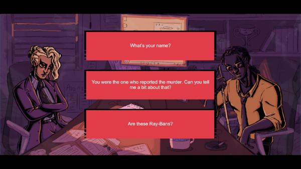
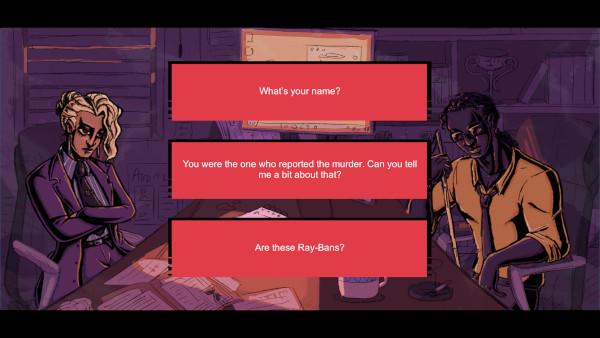
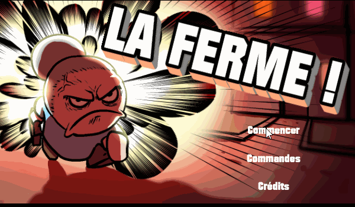
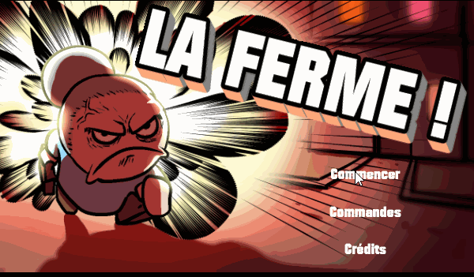
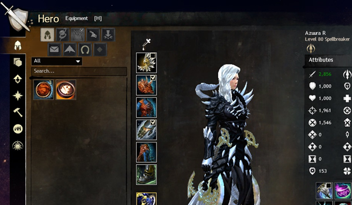
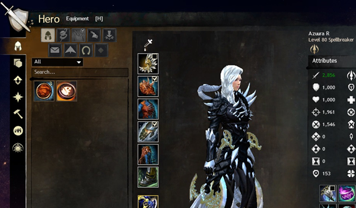
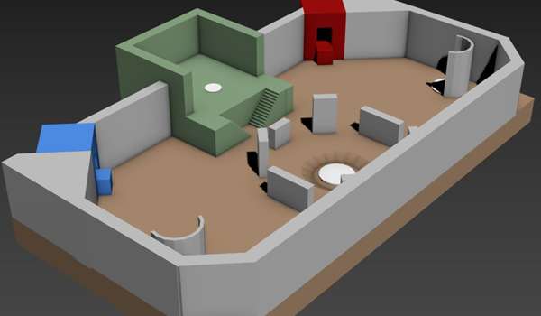
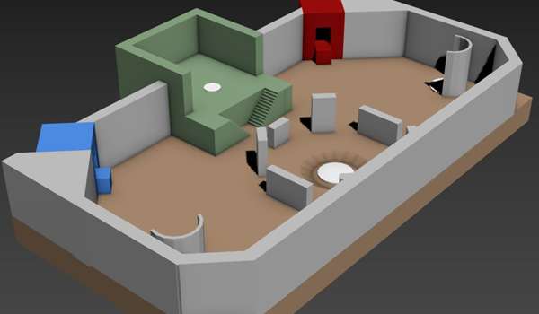
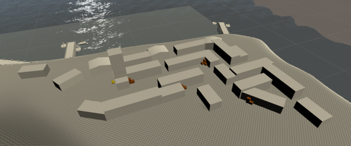
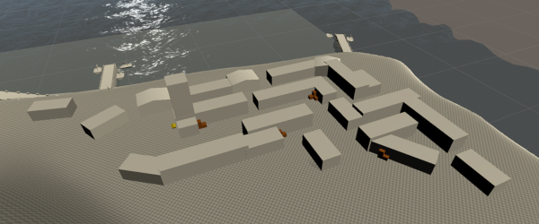

Bienvenue sur mon site!
Je suis Quentin BERARD, mais on me nomme 'Azuu' à peu près partout. J'aspire à être game designer et suis actuellement à e-artsup Nantes dans ce but. Un esprit créatif et un désir fort de produire du contenu multimédia m'a amené au développement de jeux vidéo, bien que je sois également intéressé par les domaines du serious game ou de l'expérience VR/AR.
Je suis actuellement à la recherche d'un contrat d'alternance pour ma dernière année de bachelor et/ou d'un stage de 4 à 6 mois sur la période de Juillet à Décembre 2020.
Vous pouvez en savoir plus sur moi dans la section "Profil", ainsi que découvrir certains de mes travaux dans les sous-sections de "Projets".

Quentin 'Azuu' BERARD
Infos
- Né le 1er Juillet 1997
- Réside à Nantes, France
- Langues:
Français (Langue maternelle)
Anglais
Contacts
- 07 51 62 58 27
- AzuuRa.R@hotmail.fr
- Quentin Berard
- Quentin Azuu Berard
- @AzuuRaMiR
- Partenaire ArenaNet officiel
- Rédacteur, correcteur et traducteur de guides et news
- Streamer et créateur de contenu vidéo
- Fondateur et gérant des groupes de raid "Rosters Magiques"
- Habitué des "Game Dev Afterworks"
- Bénévole pour divers événements
Game Design
- Documents de concept
- Documents de Game Design
- Prototypage
Développeur Unity
- Scripting C#
- Intégration d'assets
- Intégration de SteamVR
Arts graphiques
- Direction artistique cohérente
- Modélisation 3D
- UVs et Texturing
Level Design
- Documentation
- Blocking
- Blocking avancé
Sound Design
- Composition de musique
- Création audio
- Edition audio
Ecriture
- Narrative Design
- Ecriture de scénarii
- Documentations
Autres
- UI/UX Design
- Web Design Front-end
- Edition image et vidéo
Dev
Graphique
Audio
Doc
Forces
- Toujours calme, silencieux et détendu
- Ouvert à la critique constructive en vue de s'améliorer
- Atrait pour le travail d'équipe grandissant
- Travailleur acharné et ponctuel
- Autonome et consciencieux
Faiblesses
- Peu de confiance en soi, fréquent syndrome de l'imposteur
- Lacunes en communication orale
- Introverti
- Touche-à-tout
- Parfois trop consciencieux
Centres d'intérêt principaux
- Jeux vidéo: Principalement RPG, course automobile et narratif
- Musique: Chanteur et guitariste rythmique, friant de rock alternatif
- Création: Contenu audiovisuel, modélisation 3D et écriture
Autres intérêts
- Informatique: Hacking de systèmes, montage, programmation
- L'automobile en général, avec un atrait pour la physique et les marques japonaises
Les jeux sont publiés sous le nom "Press Art Button".
Cliquez sur un projet pour voir les détails.


Scarlet Radiance
- Moteur : Construct 2
- Plateforme(s) : PC
- Temps de développement : 1 mois
- Autres membres de l'équipe : Aucun
Scarlet Radiance est un Metroidvania minimaliste et reposant comprenant quelques légères phases de puzzle. Le joueur incarne Scarlet, une ombre suivie par des esprits, qui doit explorer un ancien temple désormais sans vie. En débloquant de nouvelles aptitudes, le joueur peut accéder à de nouvelles zones dans lesquelles il peut récupérer les clés nécessaires à l'ouverture de la grande porte scellée. Le jeu tourne implicitement autour des thèmes sérieux que sont l'isolement et du suicide.
Ce jeu constitue mon projet de fin de première année, développé seul pour me donner du challenge. Désormais considéré comme un prototype, étant donné qu'une nouvelle version plus aboutie est en cours de pré-production.
> Voir sur itch.io 

Dahlia Noir
- Moteur : Unity
- Plateforme(s) : PC
- Temps de développement : > 48 heures
- Rôles : Game Designer, Sound Designer, Narration
- Autres membres de l'équipe :
- Tiphaine Hardy
- Morgane Moenner
- Raphaël Giaccaglia
- Emma Ledru
Dahlia Noir est un visual novel basé sur le son dans lequel le joueur incarne Dahlia, une enquêtrice devant interroger trois suspects pour résoudre une affaire de meurtre. La musique joue un rôle clé dans la progression : chaque suspect est lié à un instrument de musique, et chaque choix correspond à une courte boucle qui sera ajouté à la musique. Les bons choix permettent ainsi de reconstruire la musique entière.
Développé pendant la Global Game Jam 2020 sur le thème "Reconstruire". Du au temps limité, une moitié de l'histoire n'a pas été intégrée et des corrections mineures sont nécessaires, mais il est prévu de poursuivre le projet pour refléter l'intention initiale.
> Voir sur itch.io
Project SpaceScape VR
- Moteur : Unity
- Plateforme(s) : Oculus Rift/Rift S/Quest
- Temps de développement : > 1 mois
- Rôles : Game Designer, Level Designer, Sound Designer, Developer, 3D Artist
- Autres membres de l'équipe :
Project SpaceScape VR est un jeu en réalité virtuelle fortement inspiré par les escape games. Le joueur se réveille dans un vaisseau spatial, abandonné et souffrant de plusieurs malfonctionnements. Il pourra progresser en résolvant des énigmes lui permettant d'accéder à la salle de contrôle pour pouvoir rentrer chez lui.
Le jeu initial a été produit en une semaine. La moitié de l'équipe, Hugo et moi, avons repris le projet par la suite pour lui apporter des corrections, améliorer les graphismes et ajouter de nouvelles fonctionnalités.
 

La Ferme!
- Moteur : Construct 2
- Plateforme(s) : PC - Web - Mobile - NoMad Arcade
- Temps de développement : 5 jours
- Rôles : Game Designer, Developer, Sound Designer
- Autres membres de l'équipe :
La Ferme! est une sorte de jeu de tir dans lequel le joueur incarne Mémé, une grand-mère agacée par le bruit produit par le voisinage. Armée d'une valise contenant divers objets, elle devra faire régner le calme en tirant des projectiles adéquats aux fenêtres de l'immeuble dans le temps imparti.
Développé en une semaine, le jeu était prévu pour rejoindre la catalogue de NoMad Arcade avant que le projet soit abandonné, bien qu'il soit tout de même entièrement compatible avec cette gamme de bornes d'arcade.
> Jouer sur itch.ioCircles Cycles
- Moteur : Construct 2
- Plateforme(s) : PC - Web - Mobile
- Temps de développement : ?
- Autres membres de l'équipe : Aucun
Circles Cycles est un puzzle game minimaliste et relaxant. Le joueur doit faire pivoter les cercles pour reconstituer un logo à travers plusieurs types de puzzle. La difficulté est très légère pour rendre l'expérience la moins frustrante possible et juste se laisser bercer par l'ambiance.
Développé en un temps très court, avec la contrainte de ne pas avoir de personnage à contrôler. Il est prévu que le jeu soit amélioré avec de nouveaux modes de jeu, un contenu plus conséquent, et d'en faire une application mobile.
> Jouer sur itch.ioConcepts de Game Design, Level Design et UI/UX Design.
Cliquez sur un projet pour voir les détails.
Ascend Me
Ascend Me est un concept de Tactical-RPG, inspiré principalement par la série Fire Emblem. Son objectif est de redéfinir certaines fonctionnalités récurrentes et inhérentes au genre pour apporter une nouvelle expérience au joueur : des cartes exploitant de la verticalité, des unités libérées des niveaux et des caractéristiques, et une narration importante pour faire le lien entre chaque bataille et personnages.
Le prototype est actuellement en cours de développement.
> Lire le Concept Document> Lire le Game Design Document

Bright Lights Drive
Bright Lights Drive (anciennement VAPORACE) est un concept de jeu de course arcade inspiré par diverses influences retrowave ainsi que de la série de jeux Initial D Arcade Stage. Son objectif est de proposer une expérience de course arcade à travers plusieurs modes de jeu inédits et une forte identité.
Le prototype est actuellement en cours de développement.
> Lire le Concept Document
 

Guild Wars 2 - UI Redesign Concept
Héros - Menu Equipement
Ce concept consiste en un redesign du Menu Equipement de Guild Wars 2, qui souffre de plusieurs problèmes d'expérience utilisateur venant des ajouts constants au jeu depuis ses plus de 7 ans d'existence.
Mon objectif était de réduire le nombre de manipulations venant du joueur pour naviguer à travers une interface réorganisée, tout en conservant une apparence cohérente.
> Lire le PDF (Version EN) 

Guild Wars 2 - Carte Conquête JcJ
Cromlech de Mélandru
Ce concept consiste en la création d'une carte de Conquête, le principal mode Joueur contre Joueur de Guild Wars 2.
Mon objectif était de construire un niveau inspiré par les cartes existantes en apportant un contenu original, tout en gardant à l'esprit l'aspect compétitif et l'équilibre de ses mécaniques.
> Lire le PDF (Version EN) 

Assassin's Creed Revelations
Mission Design Concept
Ce concept consiste en la création d'une mission originale pour Assassin's Creed Revelations.
Mon objectif était de construire un niveau dans un endroit non-existant du monde et d'établir une mission autour, donnant une raison cohérente à Ezio de s'y rendre.
> Lire le Concept PDF> Lire le Blocking PDF
Divers travaux d'art digital et de modélisation 3D.
Cliquez sur un projet pour voir les détails.


Projects which can't be associated with another existing category.
Cliquez sur un projet pour voir les détails.
Observatoire astronomique de la Marine de Nantes
Visite moderne en VR
- Moteur : Unity
- Plateforme(s) : Casques VR pour PC - Android
- Rôles : Game/Features Designer, Sound Designer, Developer
- Autres membres de l'équipe :
L'Observatoire astronomique de la Marine de Nantes(aussi nommé La Tour) est un projet composé de deux expériences en réalité augmenté, et de deux autres en réalité virtuelle, toutes développées par des étudiants de bachelor à e-artsup Nantes. Ce projet consiste à permettre la visite du lieu historique, fermé au public, et à ses alentours.
L'expérience "Visite Moderne" permet de visiter la tour dans son état actuel. Développé à partir de photos 360° couplées à une intégration de Steam VR sur Unity, son principal objectif est d'offrir une visite sécurisée des lieux tout en donnant des informations sur les différentes pièces. L'expérience est pensée pour être la plus accessible possible, et ne réquiert en l'état rien de plus qu'un casque VR pour en profiter.
Ce projet est destiné à être fusionné avec l'expérience "Visite 1850" pour fournir la meilleure visite possible, en offrant la possibilité de changer de période en un clin d'oeil.
Card_Hacking
Card_Hacking est une sorte de puzzle game ne reposant que sur un site internet et plusieurs réseaux sociaux. Vous devrez pirater les différents comptes de Richard Richard, une parodie d'homme riche frimant sur les réseaux sociaux, afin d'obtenir ses coordonnées bancaires.
Le principal objectif était de créer une expérience utilisant les réseaux sociaux comme terrain de jeu, tout en apportant une morale concernant l'accessibilité des données personnelles sur ce type de sites.
> Jouez ici> Voir la solution


Vice City Remaster
Vice City Remaster est un projet visant à reconstruire le monde de Vice City (Grand Theft Auto - Vice City) sur Unity. Il est divisé en plusieurs parties partageant un objectif commun qui est d'offrir une nouvelle jeunesse à ce jeu culte en s'affranchissant des contraintes posées par le moteur original. Pour la première partie, les modèles et textures sont extraits des données du jeu et sont importés sur Unity avant de recevoir un remodelage et des textures retravaillées. La seconde partie incluera un travail très conséquent sur l'ambiance, les voitures et les civils. Enfin, la troisième partie visera à apporter différents moyens d'interagir avec la ville et de l'explorer avec différents moyens, comprenant les voitures, les motos et les avions.
Actuellement, seule une petite portion de la ville est disponible sous sa forme originale.


RePlayer
RePlayer est un lecteur audio développé sur Construct 2, offrant une courte playlist et un thème typique permettant de replonger dans les années 80.
> Jouer sur itch.io